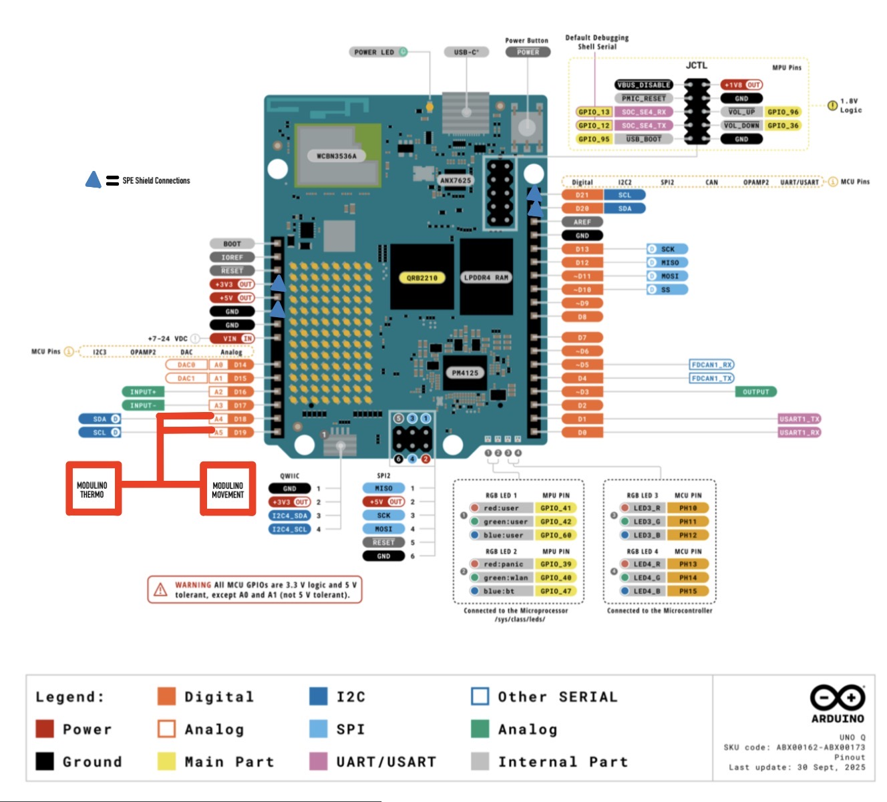

Fieldbus Thermal Simulation w/ SPE Uplink
This project was made to create an understanding for myself on how to understand the use of SPE technology and implement it on a simple project. It explores the simulation of an IoT system for future manufacturing operations. Environmental and motion sensors detect whether or not a process is operating in the correct conditions, and uses a metric based off of the 1st Law of Thermodynamics.
I try to utilize the terminology and knowledge I have learned used in building automation systems and controls in this project.
Hardware Integration

| PIN | Item | Description |
|---|---|---|
| D18 / D19 (SDA & SCL) | Modulino Thermo + Modulino Movement | Slave Node #1 & #2 |
| N/A | Arduino | Master Aggregate |
| N/A | SPE Shield | Uplink |
Logic & Calculation Framework
The values received from the Modulino Thermo are Celsius (T), and relative humidity (rH). For Movement, you get acceleration values on x,y,z (g) and angular rotation on x,y,z (dps). I wanted to create a consolidated risk metric that takes utilizes these values and determines whether the system is at risk.
Taking into consideration the 1st Law of Thermodynamics:
SLI = Simulated (Thermal) Load Index
\[ SLI = k \cdot (\omega)^2 \cdot (g_{net})^2 \cdot (T_{offset}) \]For machine monitoring, I am using the mechanical movement used from the values of the Modulino Movement for delta KE, and the Modulino Thermo temperature values for delta U for internal energy. The issue with this equation is that it is not dimensionally accurate, which is why there is a proxy, dimension-less k value. I am trying to put the total value as Watts, so below is how I derived this to be dimensionally accurate.
Dimensional Analysis of the SLI:
- include k * w^2 * gnet^2 * Toffset equation